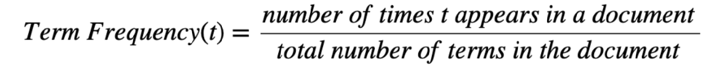
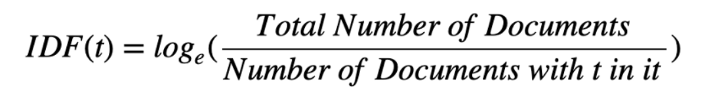
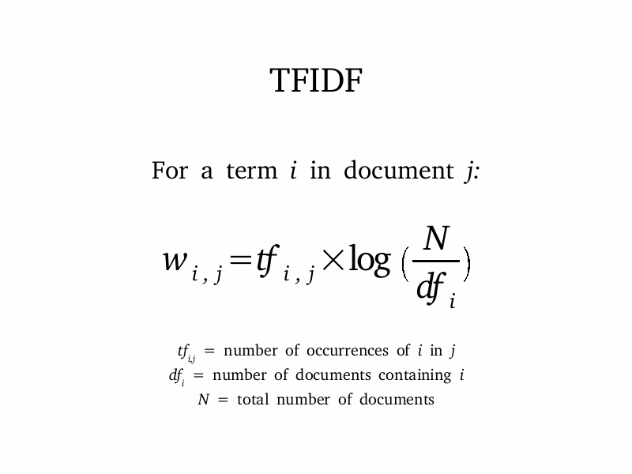

(Imported from my wordpress website)
In this section, we will analyze the sentiments of movie reviews and create a model. Then, we will deploy this model as a REST API using Flask RESTful, and finally create a Docker container for storing this code. The data used can be found here. You can find the full implementation of the code at my gihub page here.
First of all, we will use TF-IDF algorithm and Linear SVC on top of it to analyze sentiments of movie reviews. I have already explained what the TF-IDF algorithm is in one of my previous articles, so take a look at it if you don’t know how it works.
Moving forward, we will deploy our flask model in a python script “app.py”. Let’s import all the required libraries, and create the API using Flask.
(Imported from my wordpress website)
Spark Streaming is a component of Apache Spark. It is used to stream data in real-time from different data sources. In this section, we will use Spark Streaming to extract popular hashtags from tweets. The complete code implementation in Scala can be found at my GitHub page here.
Working of Spark Streaming can be quickly explained as follows:
1) Streaming Context: It receives stream data as input and produces batches of data.
2) Discretized Stream(DStream): It is a continuous data stream, which the user can analyze. It is represented by a continuous set of RDDs and each RDD represents stream data from a specific time interval. The receiver receives streaming data and converts it into Input DStreams which can be used for processing. Certain transformations can be applied to DStream objects. Output DStreams are used to export data to external databases for storing it.
3) Caching: If the streaming data is to be computed multiple times, it is better to persist it using persist(). It will load this data in memory and by default, data is persisted two times in memory for backup in case of failure.
4) Checkpoints: We create checkpoints at certain intervals to rollback to that point in case of failure in the future.
Let’s begin by importing the libraries:
(Imported from my wordpress website)
Topic modeling is used to extract topics with keywords in unlabeled documents. There are several topic modeling algorithms out there which include, one of which will be covered in this section, namely: Latent Dirichlet Allocation(LDA). The complete implementation in Scikit-Learn can be found at my GitHub page here.
Latent Dirichlet Allocation(LDA) is a topic modeling algorithm based on Dirichlet distribution. The procedure of LDA can be explained as follows:
1) We choose a fixed number of topics(=k).
2) Go through each document, and randomly assign each word of document to one of the k documents.
3) Now, iterate over each word in every document.
4) For each word in every document, for each topic t, find:
P(t|d) = Proportion of words in document d that are currently assigned to topic t
P(w|t) = Proportion of assignments to topic t over all documents that come from this word w
5) Reassign each word w a new topic, using:
t(w) = p(t|d) * p(w|t) = Probability that topic t generated word w
Let’s start by importing the libraries and loading data.
(Imported from my wordpress website)
The full code implementation along with data used in this section can be found at my GitHub page here.
Suppose we have a document(or a collection of documents i.e, corpus), and we want to summarize it using a few keywords only. In the end, we want some method to compute the importance of each word.
One way to approach this would be to count the no. of times a word appears in a document. So, the word’s importance is directly proportional to its frequency. This method is, therefore, called Term Frequency(TF).

This method fails in practical use as words like “the”, “an”, “a”, etc. will almost always be the result of this method, as they occur more frequently. But of course, they are not the right way to summarize our document.
We also want to take into consideration how unique the words are, this method is called Inverse Document Frequency(IDF).

So, the product of TF and IDF will give us a measure of how frequent the word is in a document multiplied by how unique the word is, giving rise to Term Frequency-Inverse Document Frequency(TF-IDF) measure.

We implement this using scikit-learn. Let’s begin by reading the file.
(Imported from my wordpress website)
Data science learners have to spend a lot of time cleaning data to make sense of it before using machine learning algorithms. Being able to collect data is a skill just as important, and a cool one too! In this section, I will explain how to collect data of LinkedIn profiles and store it into MS Excel using Scrapy.
An implementation of this code can be directly found at my GitHub page here.
Assume that your employer wants to hire Python web developers from London. Such tasks can be time-consuming and automating this process can be very useful. I chose Scrapy and Selenium for following reasons:
1) Scrapy is a very fast fully stacked web scraping framework. BeautifulSoup is not as fast and requires more code relatively.
2) Scrapy is not well suited for scraping heavy dynamic pages like LinkedIn. Selenium’s web drivers can make this task very easy for us.
While I could have used the Scrapy framework, for keeping it simple, I have implemented the code using a simple Python script.
Lets start by importing required libraries.